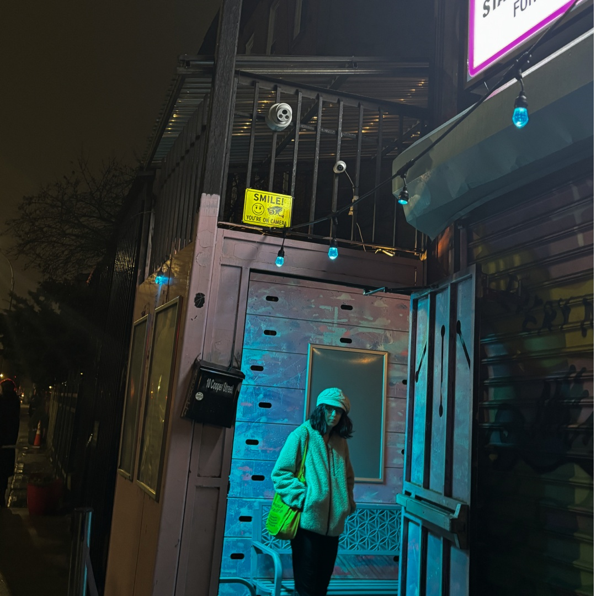
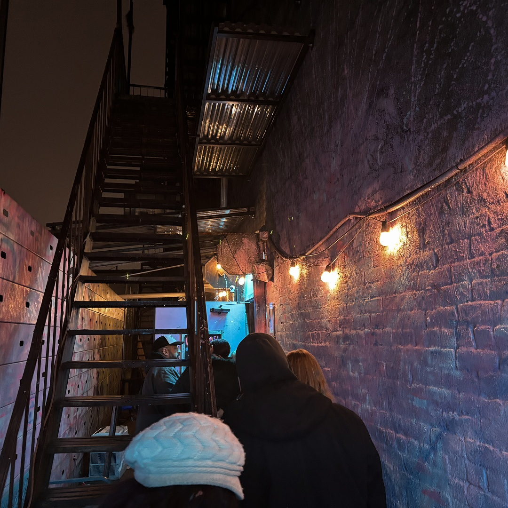
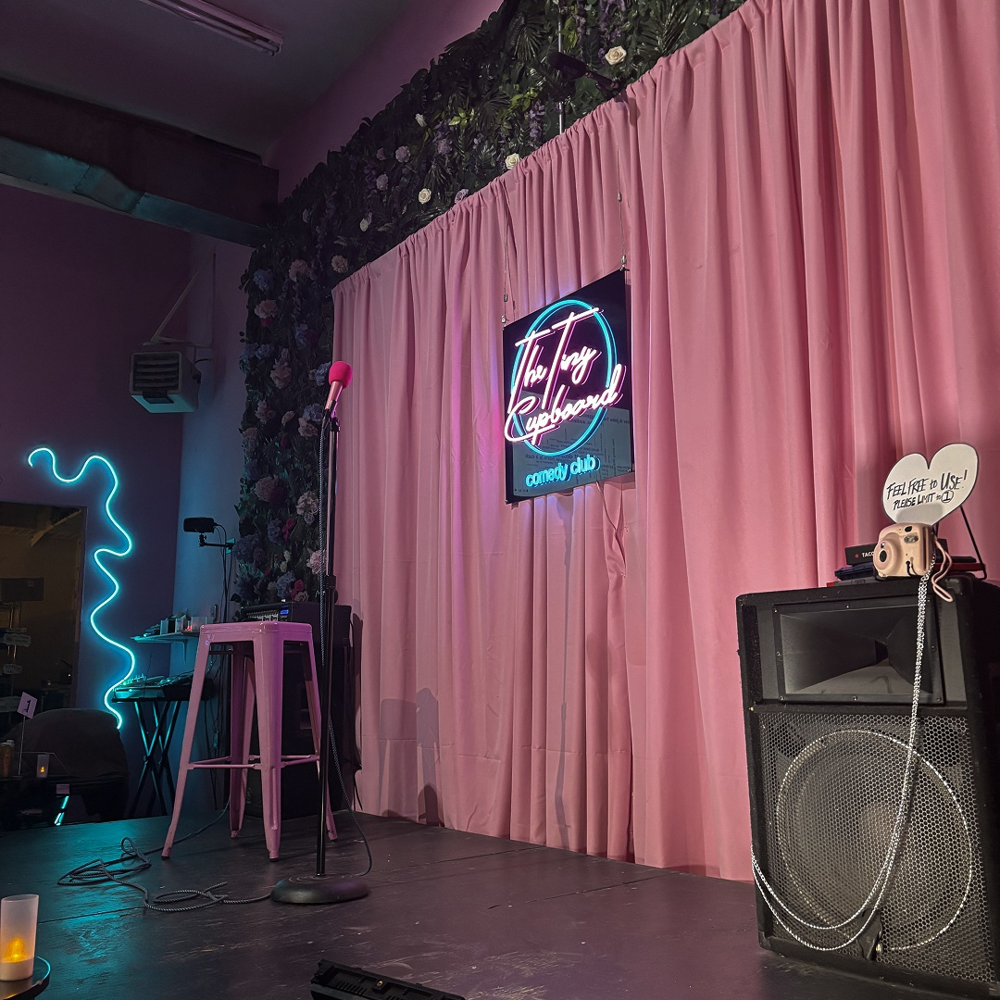
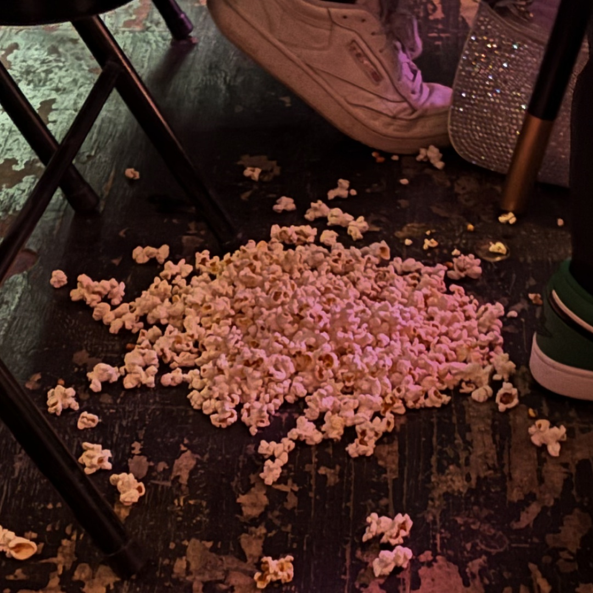

An Evening at the Tiny Cupboard
Friday night at NYC's best kept secret.
By: Ash Reynolds
Txt Img Multi
If it weren’t for the flickering neon sign, you’d likely walk right past the Tiny Cupboard, hardly noticing anything.



“Do we have any crafters here?” one of the first comics, Kate Willet, asks the crowd.
About half of the room hollers back.

The M train grumbles above the exit as the pink neon sign flickers out, and The Tiny Cupboard disappears back into the crowded cityscape of Brooklyn.